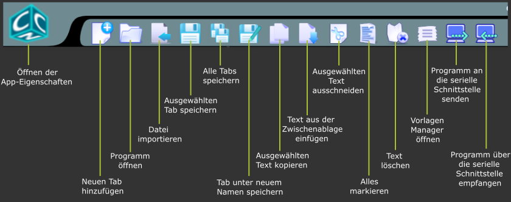
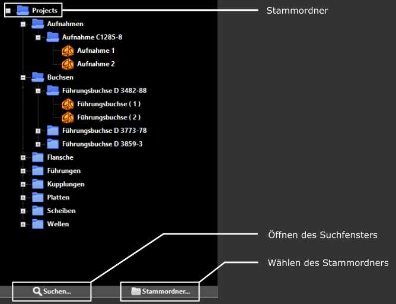

Allgemeine Hinweise zu Zweck und Verwendung der App
CnC Suite ist ein Editor für NC Programme auf PAL-Basis.
Das Programm bietet folgende Funktionen:
- Durch den integrierten Datei-Explorer können NC-Programme bequem geordnet und verwaltet werden.
- Das verwendete cnc3 Dateiformat macht es möglich Informationen wie z.B. Zeichnungsnummer, Kundennummer oder eine Beschreibung des Werkstückes direkt mit dem NC-Programm abzuspeichern und über die Suchfunktion zielgerichtet danach zu suchen.
- Der Editor kann benutzerdefiniert eingestellt werden und so auf die Besonderheiten jeder Programmiersprache eingestellt werden. Syntax-Highlighting, Fehlererkennung und automatische Vervollständigung können beliebig gesetzt werden.
- Schnelles Programmieren durch die Benutzung von Vorlagen und Ausschnitten welche selber erstellt werden können.
- Natürlich besteht die Möglichkeit NC-Programme über eine serielle Schnittstelle zu einer Maschine zu übertragen.
Die Anwendung ist darauf ausgerichtet mit einem Stammordner zu arbeiten, welcher alle Programme und Projektordner enthält. Sowohl der Dateiexplorer als auch die Suchfunktion arbeiten mit diesem Ordner. Nach der Installation ist der Projektordner im CnC Suite Benutzerordner (Dokumente/CnC Suite) vorausgewählt. Natürlich kann auch jeder andere Ordner im System gewählt werden, mit Ausnahme von Laufwerken.
Der CnC Suite Benutzerordner dient dem Speichern von Anwendungsdaten und sollte ohne genaue Kenntnis der einzelnen Dateien nicht manuell geändert werden.
Die Steuerelemente


 Das Dateiformat *.cnc3 besteht aus dem eigentlichen NC-Programm und 3 zusätzlichen Beschreibungen, welche durch die Beschreibungsboxen gesetzt werden können.
Das Dateiformat *.cnc3 besteht aus dem eigentlichen NC-Programm und 3 zusätzlichen Beschreibungen, welche durch die Beschreibungsboxen gesetzt werden können.